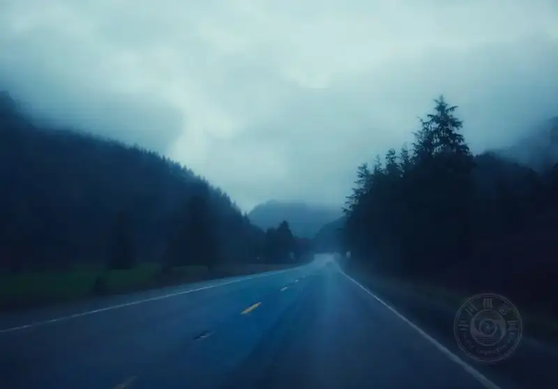
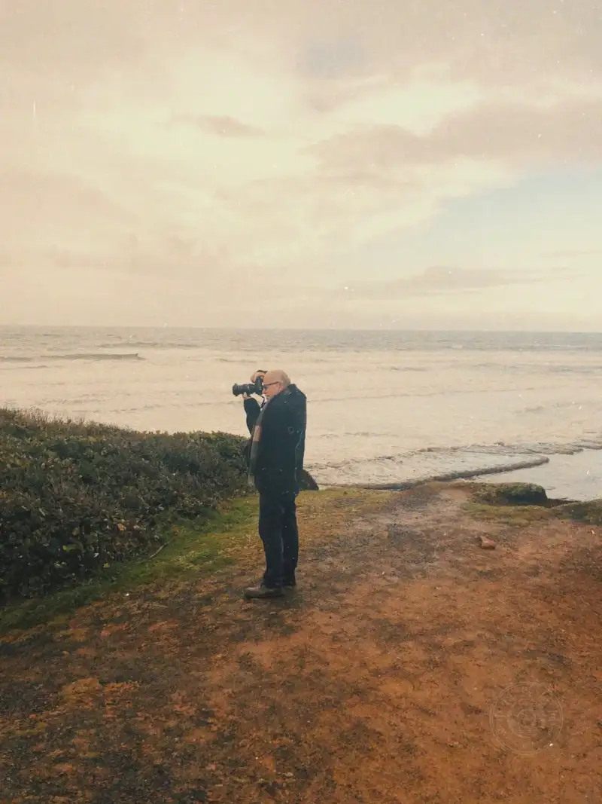

Composition is essential because we use the frame to guide the mind of a stranger who looks at the photo. From birth, the brain perceives the world in three dimensions. Our two eyes sit on either side of the head and send visual signals to the brain. The brain then builds a three-dimensional picture. There is nothing mysterious about composition. Every time you frame a shot, you are, in essence, passing on a moving scene from your own eyes to a viewer who was not there. When you raise the camera to your eye, you are already arranging the elements in the frame without thinking.
The real appeal of photography comes from mastering a sound composition system: how to build a frame that pleases the eye, carries the point of the shot, and stirs a feeling in the viewer. That is the core value of composition, and now you know why.
Photograph by Kent DuFault
Composition, in simple terms, is arranging the elements in the frame so the work can move more viewers.
When you start, composition demands thought and practice. Once you are skilled, it becomes instinct. Faced with a scene, you naturally decide what to keep and what to leave out.
Below, I use a few real examples to explain why composition matters.
Photograph by Callum Hill
The goal of this photo was to show a little boy happily blowing bubbles.
But the messy, unordered composition greatly weakens the message. The work is hard for most people to connect with. It feels flat, and maybe only the child's family would find it interesting. This frame lacks a broad artistic pull.
Photograph by Gianandrea Villa
This bubble photo instantly moves all kinds of viewers.
Why? Its composition is skillful.
This image uses several strong composition techniques:
· The background is clean and simple. It gives color contrast and sets the scene, but it does not pull the eye from the subject or disturb the core image of the person blowing bubbles;
· The bubbles, varying in size, form a repeated element. Their outlines are clear, and against the background they read with depth and humor;
· The key subject is in sharp focus, while the unrelated background is blurred;
· The person's full facial expression is shown, so the feeling is easy to read;
· The person's gaze follows the act of blowing bubbles, which guides the viewer's eye;
· The bubbles and the hand sit at the golden point of the frame.
Photograph by Gayatri Malhotra
Let us look at another example.
This photo wastes a great chance. At best, we can tell that something interesting happened. Beyond that, the information in the frame is unclear. We cannot tell why the gathering took place, and we do not know the people in the image, especially the little boy the photographer wanted to highlight. It is fine to leave some space and keep a little mystery, because that sparks the viewer's imagination. But the photographer must keep enough information for the viewer to build a full story in their mind.
Photograph by Gayatri Malhotra
This photo by the same photographer is far better composed.
· The viewer can clearly read the theme of the gathering;
· The mood the frame carries and the outline of the story are clear at a glance;
· The man holding the sign is placed as the main subject, while the background adds narrative detail;
· The outline and pattern of the sign instantly lock the visual weight onto that man.
When we teach composition, we keep coming back to the core idea of intent. The frame must fit closely with your intent for the shot.
The full creative process has seven steps:
1. The photographer sees a scene that draws them;
2. They decide to shoot it;
3. They decide what they want to say through the scene. This step sets the intent for the shot;
4. They arrange the elements in the scene to serve that intent;
5. They press the shutter;
6. They edit the image to strengthen the intent further;
7. The work is complete.
Many photographers only do steps 1, 2, and 7. The photos they take often fail to carry the core idea they want to express.
Try this: compose with a clear intent.

Photograph by Kent DuFault
This photo is a fine example of building a visual path while telling the story in the frame. Let us break it down:
Visual path design:
- The road that runs into the depth of the frame forms a strong leading line;
- The dark trees and the sky form a light-dark contrast that acts as a secondary leading line;
- The single tone sets an overall somber, quiet mood;
- The vehicle is the focal point and the main subject of the whole landscape.
Reading the story in the frame:
- The gloomy, bleak weather and a lone drive on the road instantly set a lonely, cold mood;
- In the harsh setting, the end of the curve seems to hide some unknown risk.

Photograph by Kent DuFault
Here are some composition techniques I recommend you practice. Give each shot a sense of story:
· Leading lines
· Focal point
· Rule of thirds
· Single tone
· Depth of field
· Framing
When you start photography, the idea of composition can feel daunting. But composition is like riding a bike. After you practice for a while, using it becomes instinct, and you no longer have to think about it. Start with the six techniques listed above. Once you know them well, move on to more complex techniques. Build a solid base and go step by step. Above all, enjoy the photography.